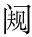

外平不書前楚、鄭平不書。，此何以書？大其平乎己也己，指華元、子反，對君而言也。○提出主意。。何大其平乎己？莊王圍宋，軍有七日之糧爾，盡此不勝，將去而歸爾先插子反語作敘事，文情妙絕。。於是使司馬子反乘堙因。而宋城，宋華元亦乘堙而出見之堙，距堙，上城具。○相見便奇。。司馬子反曰：「子之國何如？」華元曰：「憊敗。矣憊，疲極也。。」曰：「何如問憊狀。? 」曰：「易子而食之，析骸而炊之竟以實告。。」司馬子反曰：「嘻！甚矣憊倒句妙。若言「憊甚矣」，便無味。！雖然雖如子言。，吾聞之也：圍者見圍者。柑鉗。馬而秣之以粟飲馬曰秣。柑者，以木銜馬口，使不得食，示有蓄積。，使肥者應客肥，謂肥馬。示飽足也。。是何子之情也情，實也。○怪其以實告。子反之心已動。? 」華元曰：「吾聞之：君子見人之厄則矜之，小人見人之厄則幸之。吾見子之君子也，是以告情於子也說出實告之故，尤足動人。。」司馬子反曰：「諾。勉之矣令勉力堅守。○已心許之，而語絕不露，妙。。吾軍亦有七日之糧爾，盡此不勝，將去而歸爾亦以實告。。」揖而去之。
反於莊王反報於莊王。。莊王曰：「何如？」司馬子反曰：「憊矣！」曰：「何如？」曰：「易子而食之，析骸而炊之。」莊王曰：「嘻！甚矣憊復前語，不變一字，文法最紆徐有韻。！雖然雖然憊極。，吾今取此，然後而歸爾本將去而歸，轉欲乘其憊。。」司馬子反曰：「不可。臣已告之矣，軍有七日之糧爾亦以實告。。」莊王怒曰：「吾使子往視之，子曷為告之？」司馬子反曰：「以區區之宋，猶有不欺人之臣，可以楚而無乎？是以告之也華元全以「君子」二字感動子反，子反全以「不欺」二字感動莊王。。」莊王曰：「諾。舍而止命子反築舍處此，以示不去。。雖然雖我糧盡。，吾猶取此，然後歸爾莊王被子反感動，欲取不可，欲去不甘，意實無聊，故復作此語。觀下「臣請歸爾」、「吾亦從子而歸爾」便見。。」司馬子反曰：「然則君請處於此，臣請歸爾諧語正極得力。。」莊王曰：「子去我而歸，吾孰與處於此？吾亦從子而歸爾諧語得力如此。。」引師而去之。故君子大其平乎己也結出主意。。此皆大夫也，其稱「人」何？貶。曷為貶？平者在下也罪其專也。既大之，復貶之，洗髮經文無漏義。。
通篇純用復筆，曰「憊矣」、曰「甚矣憊」、曰「諾」、曰「雖然」，愈復愈變，愈復愈韻。末段曰「吾猶取此」而歸、曰「臣請歸爾」、曰「吾亦從子而歸爾」，尤妙絕解頤。